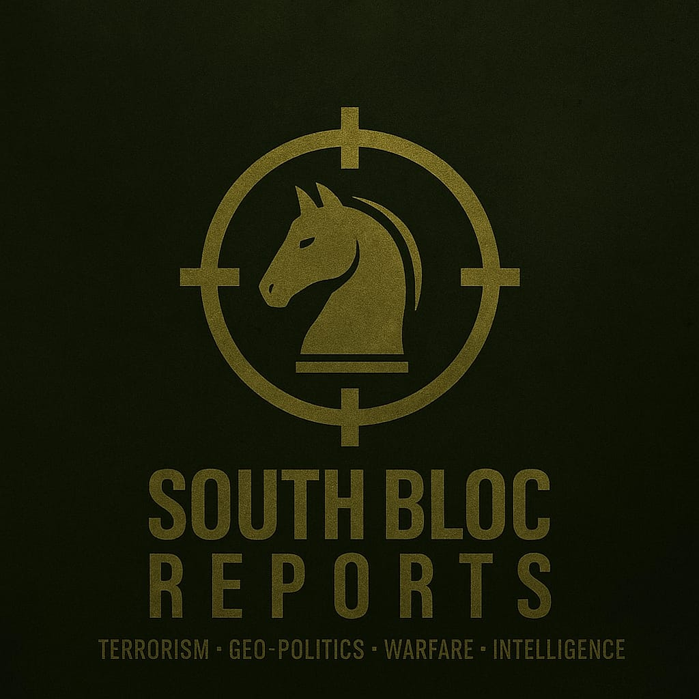
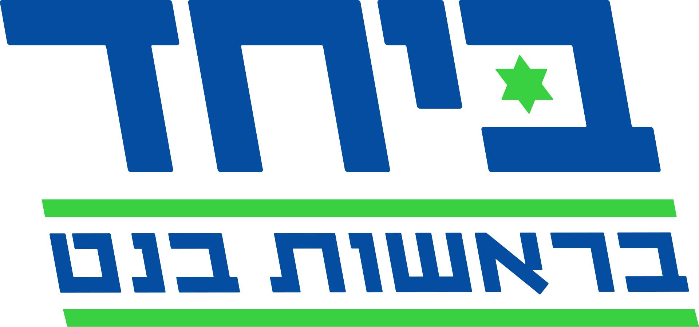
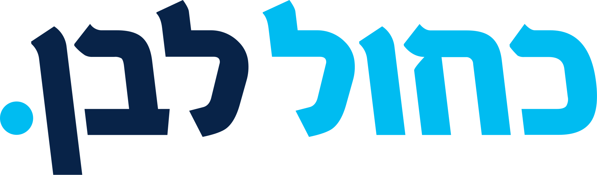
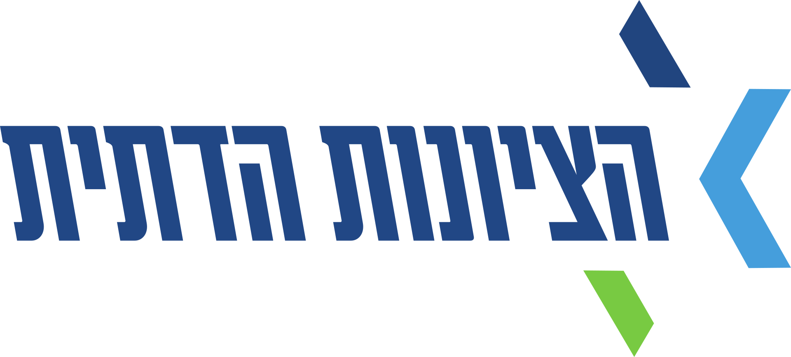
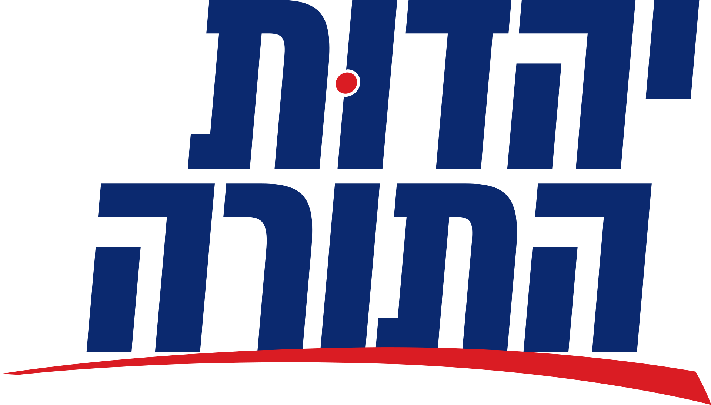
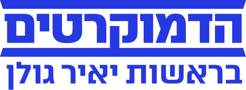
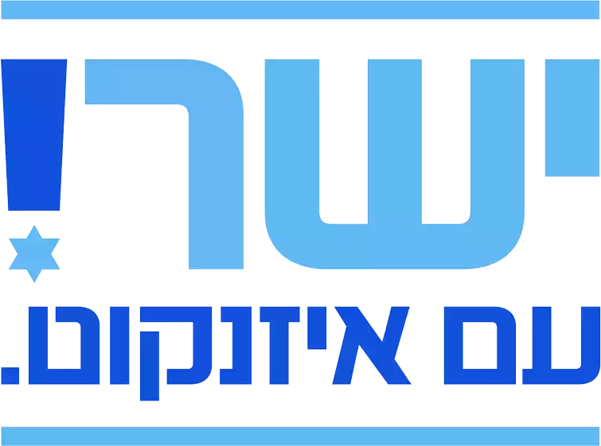
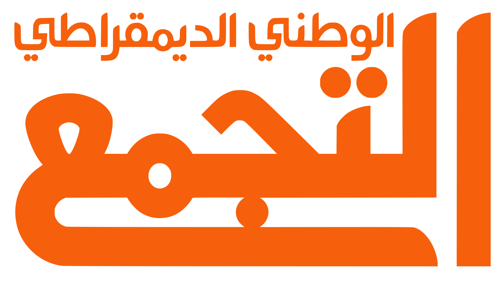
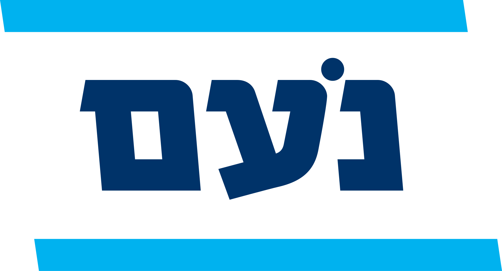
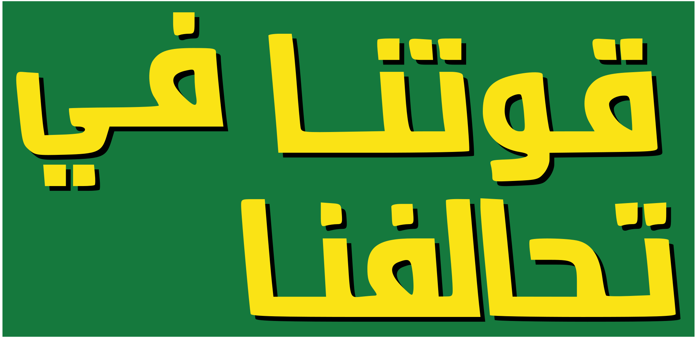

LIKUD

LIKUD
The primary national-conservative ruling party of Israel, combining traditional security hawkishness, free-market economics, and absolute loyalty to Benjamin Netanyahu.

Together Party
Together Party
The newly forged political super-list that merges Naftali Bennett’s nationalist base with Yair Lapid’s secular centrist voters to create a massive bloc designed to replace Likud.
Shas
Shas
A powerful ultra-Orthodox religious party serving the Mizrahi (Middle Eastern and North African) Jewish population, prioritizing social welfare and state-backed clerical control.

Blue and White - National Unity
Blue and White - National Unity
A centrist, security-first political alliance led by former military chiefs that positions itself as a stabilizing, institutional alternative for moderate traditionalist.

Religious Zionism
Religious Zionism
An ideological right-wing party representing the West Bank settler movement, advocating for territorial annexation and the integration of biblical values into state institutions.

United Torah Judaism (UTJ)
United Torah Judaism (UTJ)
An alliance of Ashkenazi (European) ultra-Orthodox factions entirely dedicated to protecting traditional Torah study, securing state education funding, and enforcing military draft exemptions.
Otzma Yehudit
Otzma Yehudit
A hardline, populist ultra-nationalist party focused on aggressive counter-terrorism, uncompromising law-and-order policies, and expanding state sovereignty.
Yisrael Beytenu
Yisrael Beytenu
A secular, right-wing nationalist party that combines a hardline stance on regional defense with an aggressive push to end ultra-Orthodox institutional privileges.

The Democrats
The Democrats
The newly established powerhouse of the Zionist Left, created through a permanent merger of the historic Labor and Meretz parties to fight for liberal democracy and democratic state institutions.

Yashar
Yashar
A brand-new reformist list launched by former IDF Chief Gadi Eisenkot, focusing strictly on institutional integrity, military readiness, and anti-corruption governance.


Hadash-Ta'al-Balad
Hadash-Ta'al & Balad
A strategic trilateral alliance formed by the major Arab secular and nationalist factions to maximize voter turnout and prevent threshold elimination, solidifying a unified anti-coalition bloc.

Noam
Noam
A small, ultra-conservative religious faction dedicated exclusively to promoting traditional family structures and combating secular liberal influences within public education.

Ra'am
Ra'am
An Islamist faction that pioneered a pragmatic approach to Israeli governance, willing to join ruling coalitions in exchange for domestic budgets to combat crime and build infrastructure in Arab towns.